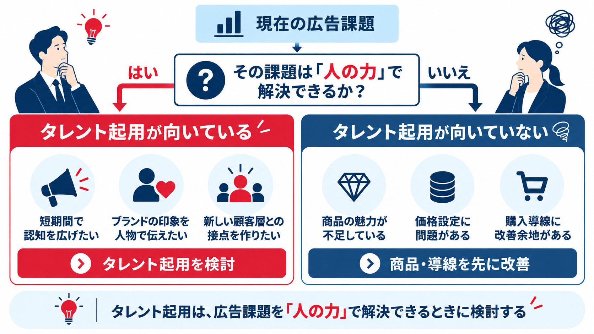
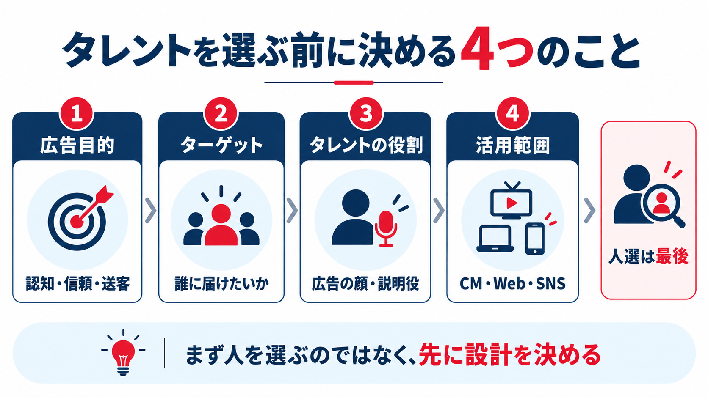
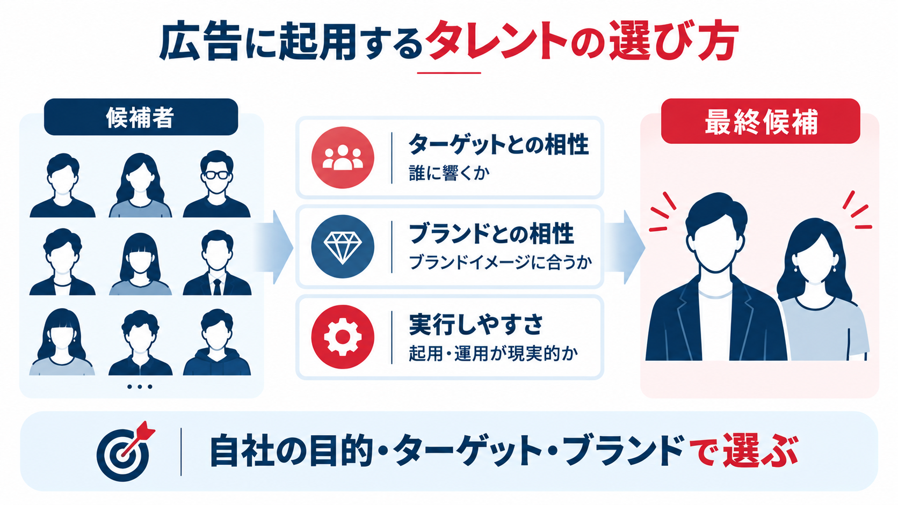
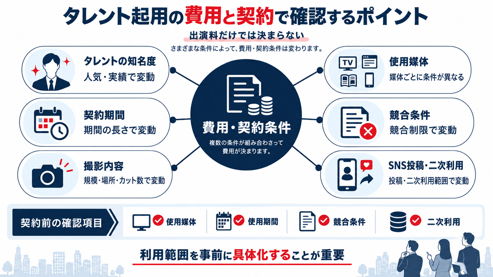
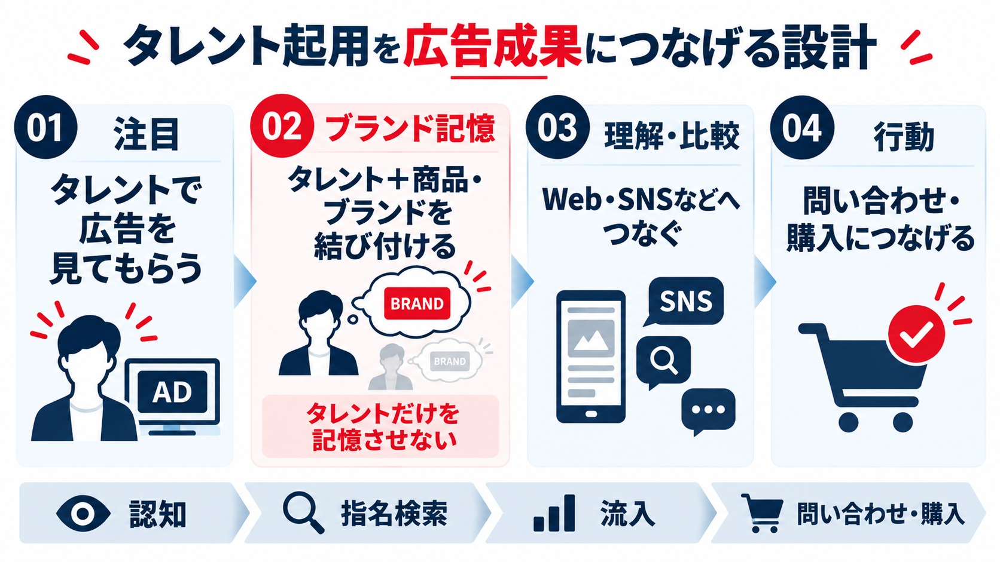
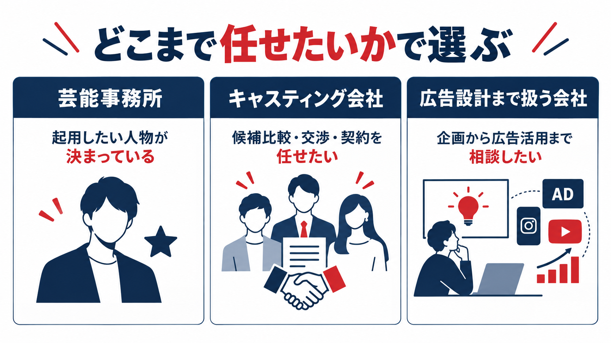

タレント起用の効果とは？広告で成果につなげる選び方と注意点
タレント起用を成功させるうえで、最初に決めるべきなのは「誰を起用するか」ではありません。まず、誰に、どんな印象や行動変化を起こしたいのかを決め、その目的に合う人物を選ぶことが重要です。
著名人を起用した広告の研究でも、効果は一律ではなく、人物と商品・ブランドの相性などによって変わることが示されています。 本記事では、タレント起用が向いているケースから、人選、費用・契約、起用後の広告設計まで、実務の順番に沿って整理します。
タレント起用は「人選」から始めない。 目的 → ターゲット → タレントの役割 → 人選 → 契約 → 活用・効果測定の順で設計すると、起用理由と成果指標がぶれにくくなります。
タレント起用が向いているケース・向いていないケース

タレント起用は、広告課題によって向き・不向きがあります。まず「タレントを使うか」ではなく、「今の課題を人の力で解決する必要があるか」を判断しましょう。
タレント起用が向いているケース
特に相性がよいのは、短期間で認知を広げたいとき、ブランドの抽象的な価値を人物のイメージで伝えたいとき、これまで接点の少なかった層へ届けたいときです。人物そのものが広告を見る理由になり、商品やブランドを知る入口を作れます。
| 広告課題 | タレントに期待する役割 | 見るべき指標の例 |
|---|---|---|
| 商品・ブランドの認知が低い | 広告に目を向けてもらうきっかけを作る | 広告認知、リーチ、指名検索 |
| ブランドの印象が伝わりにくい | 信頼感・親しみ・専門性などを体現する | ブランド想起、好意度、メッセージ理解 |
| 新しい顧客層へ広げたい | ファンや支持層との接点を作る | SNS反応、サイト流入、新規接触数 |
タレント起用が向いていないケース
一方で、タレント起用が向いていないのは、広告課題が「認知不足」や「ブランドイメージの形成」ではなく、商品そのものの魅力不足や価格、購入導線などにある場合です。こうした課題は、タレントを起用して露出を増やしても解決しにくいため、先に商品や導線を見直す必要があります。
また、ターゲットや訴求内容が定まっていない、広告を見た後の受け皿が整っていない、起用後に何を測るか決まっていない場合も、現時点ではタレント起用に向いているとはいえません。まず広告課題とゴールを整理し、タレントを起用する意味を明確にしてから検討することが重要です。
タレントを選ぶ前に決める4つのこと

候補者探しを始める前に、次の4点を決めておくと、人選の基準が明確になります。
- 広告目的：認知拡大、信頼形成、送客、購入など、何を変えたいか
- ターゲット：誰に届けたいか、その人がどんな価値観や関心を持つか
- タレントの役割：広告の顔、商品説明、体験者、SNS発信者など、何を担ってもらうか
- 活用範囲：テレビCM、Web広告、SNS、イベント、店頭など、どこまで展開するか
ここが決まると、「有名だから」ではなく「この目的に、この人が必要だから」という起用理由を作れます。
広告に起用するタレントの選び方

ターゲットとの相性
候補者の知名度だけでなく、自社が届けたい層の中でどの程度知られ、どのように支持されているかを確認します。若年層向けの商品であれば、全国的な知名度より、対象層の中での支持やSNS上の反応が重要になることもあります。
ブランドとの相性
タレントが持つイメージと、ブランドが伝えたい印象が一致しているかを見ます。たとえば、信頼感を高めたいのか、親しみを持たせたいのか、専門性を補強したいのかで適した人物は変わります。
Knoll & Matthes（2017）は、2016年4月までに公表された46件の研究、計10,357人を対象に、著名人起用の効果をメタ分析しています。その結果、起用する人物と商品・ブランドの適合度などの条件によって、消費者の態度への効果が大きく異なることが示されました。したがって、知名度だけでなく、「その人物と商品・ブランドの組み合わせに納得感があるか」まで確認することが重要です。
広告で担う役割との相性
「広告に出てもらう」だけではなく、何をしてもらうかまで確認します。商品を説明するなら説得力、SNSで発信してもらうなら普段の発信内容やファンとの関係性、イベントならトークや場づくりの力など、役割によって評価軸が変わります。
契約・実行のしやすさ
企画に合う人物でも、競合契約、出演スケジュール、使用したい媒体や期間によっては起用できません。候補者を絞る段階で実務条件まで確認し、企画として実現できる人物かを判断します。
最終候補については、「なぜこの人なのか」を一文で説明できるかを確認すると、人選の妥当性をチェックしやすくなります。
タレント起用の費用と契約で確認するポイント

費用は出演料だけでは決まらない
タレント起用の費用は、人物の知名度だけでなく、使用する媒体、契約期間、地域、競合制限、撮影内容、SNS投稿の有無などによって変わります。そのため、「このタレントはいくらか」だけを先に聞くより、どのように使いたいかを整理して見積もる方が現実的です。
契約前に利用範囲を具体化する
広告出演契約では、使用媒体、使用期間、競合条件などを事前に整理する必要があります。JMAAのガイドラインでも、これらを発注時に明確にする考え方が示されています。
| 確認項目 | 事前に決める内容 | 後から起こりやすい問題 |
|---|---|---|
| 使用媒体 | テレビ、Web広告、SNS、店頭、交通広告など | 契約外の媒体で素材を使えない |
| 使用期間 | 開始日・終了日、延長の可能性 | キャンペーン延長時に再交渉が必要になる |
| 競合条件 | どの商品・サービスを競合とするか | 条件が広すぎると費用や交渉難度が上がる |
| 二次利用 | 撮影素材の切り出し、SNS投稿、Web動画など | 撮影後に追加活用したくても使えない |
媒体展開を後から増やす可能性があるなら、撮影前の段階で「どこまで使う可能性があるか」を洗い出しておくことが重要です。
タレント起用を広告成果につなげる設計

タレントと商品を同時に記憶してもらう
タレントの存在感が強いほど、「出演していた人は覚えているが、何の広告だったか分からない」という状態が起こり得ます。クリエイティブでは、タレントの役割を商品特徴やブランドメッセージと結び付ける必要があります。
「この人だから、この商品のこの価値を伝える」という関係を作ると、タレントの印象をブランド側へ残しやすくなります。
広告を見た後の導線まで設計する
テレビCMやSNSで注目を集めても、その後に詳しい情報を得られる場所や行動先がなければ、関心は離れてしまいます。CM → Webサイト、SNS → 特設ページ、イベント → 店舗・ECなど、接点をつなげて設計します。
同じ素材をすべての媒体に流用するのではなく、媒体ごとに「認知」「理解」「比較」「行動」のどこを担うのかを決めると、タレントを複数接点で活用しやすくなります。
KPIは起用前に決める
広告公開後に成果指標を決めると、都合のよい数字だけを見ることになりやすいため、起用前にKPIを設定します。認知が目的なら広告認知や指名検索、Web送客ならサイト流入、販売促進なら問い合わせや購入など、目的と指標を対応させます。
タレント起用の評価は「話題になったか」ではなく、最初に決めた広告目的をどこまで動かせたかで行うのが基本です。
タレント起用は誰に依頼するべきか

依頼先は、「候補者が決まっているか」「どこまで社内で対応できるか」で選びます。
| 依頼先 | 向いているケース | 主な特徴 |
|---|---|---|
| 芸能事務所へ直接 | 起用したい人物が決まっている | 候補比較や他事務所との調整は自社で行う必要がある |
| キャスティング会社 | 複数候補を比較し、交渉・契約・撮影進行まで任せたい | 事務所横断での候補提案や実務調整をまとめやすい |
| 広告設計まで扱う会社 | 人選だけでなく、企画・制作・SNS・広告活用まで考えたい | タレント起用を広告施策全体の中で設計できる |
特に初めての起用や、複数の芸能事務所をまたいで候補を比較したい場合は、候補提案だけでなく、契約・権利・スケジュールまで扱えるかを確認すると安心です。
イー・スピリットのタレント起用支援
イー・スピリットは、キャスティングを単なる「人の手配」ではなく、商品理解・課題整理・ターゲット設定から考える広告戦略の一部として位置づけています。
候補者選定では、広告契約状況や出演情報、SNSデータ、社内独自情報などを蓄積する「e-Spirit Now」を活用しています。また、全国1,200社超の芸能事務所ネットワークと6万人超のタレントデータベースを掲げており、複数候補の比較からオーディション、交渉・契約まで幅広く対応しています。
「誰を起用するか」からではなく、広告目的に合う人物を探し、契約や活用まで一貫して進めたい場合は、企画段階から相談する方法があります。
タレント起用は「人選」ではなく広告設計から始める
タレント起用の成否は、知名度の高さだけでは決まりません。広告目的とターゲットを整理し、その中でタレントに担ってもらう役割を決め、目的に合う人物を選ぶことが出発点です。
さらに、媒体・契約期間・競合条件などを事前に整理し、広告を見た後の導線とKPIまで設計しておくことで、タレント起用を単発の話題づくりではなく、広告成果につながる施策として運用しやすくなります。
タレント起用について相談する
イー・スピリットでは、起用する人物が決まっていない企画段階から、商品・ターゲット・広告課題に合わせたキャスティングを相談できます。
参考資料
- 日本モデルエージェンシー協会（JMAA）広告出演契約ガイドライン
- Knoll & Matthes (2017), The effectiveness of celebrity endorsements: a meta-analysis